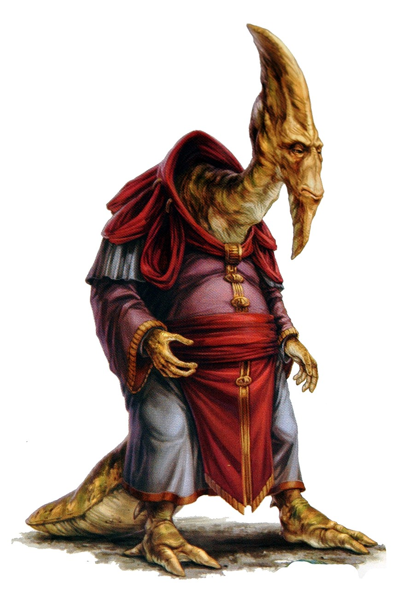

Anx
Special Abilities: Anx begin the game with one rank in the Kill with Kindness talent.
Anatomical Knowledge: Anx have an innate grasp of how bodies are put together and are able to intuit the anatomical vulnerabilities of almost any species. Anx gain one rank of the Lethal Blows talent.
Mood Indicator: If an Anx's head-crest is not covered, the character upgrades the difficulty of Deception checks once.
The reptilian Anx of Gravlex Med loom over most other sentient species, despite their natural hunched posture. Given this, together with their deep, rumbling voices and the color-changing crests atop their heads, there is no mistaking an Anx anywhere in the galaxy.
Anx are native to a high-gravity world; their dense musculature, stooped posture, and heavy balance of their tails all reflect this to even a casual observer. However, the species can often reach four meters in height, despite these restrictions. Their great height allowed the Anx to easily harvest the bounty of their homeworld’s chiliox trees when they emerged from their subterranean habitat.
Because the Anx evolved within the cave systems of their homeworld, their voices have a natural low-frequency echo that, while useful for communicating across vast distances underground, tends to make other species deeply uncomfortable. The Anx in turn are frequently discomfited by how other species have learned to read the color changes of the large crest atop their head as an indicator of their mood, a quirk of their communal lives in their native herd-based social structure.
Anx society began as an extension of their natural herd structure, and even modern Anx tend to be fiercely devoted to their families and clans. Their internal clan structure is rooted in a mix of extended family bonds and political alliances, and can be difficult for outsiders to decipher. These complex ties are easily grasped by the Anx themselves, as their society developed its complexities long before encountering other species.
The Anx developed space travel independently from galactic society. They have had a long and proud history of interstellar exploration and colonization, using both the ancient Gravlex Launchworks and more modern hyperdrive engines. The species is sometimes viewed as excessively curious, but this might also stem from their confidence that they can handle most things the galaxy is capable of throwing at them. Between their massive stature and strength and a curious ability to intuit the weak spots in the anatomy of other species, the Anx have historically dealt with every challenge they have faced with relative ease.
Unfortunately, recent events have finally confronted the Anx with a threat they cannot easily defeat. After the rise of the Empire, Imperial authorities seized the Launchworks in order to study the technology for potential weapons applications. The Imperials have polluted the planet with the hazardous refuse of their experiments and have placed garrisons without regard to the territorial claims of the Anx clans. Many Anx have begun migrating offworld, fearful of what the Imperials might do to their world next.
The Anx’s reputation for courage and bold action is being tested as the Empire tightens its grip. Anx society lacks the resources to challenge the Empire on its own, especially with Imperial attention already upon its homeworld. It may be that the long legacy of the Anx could become fractured by an exodus from Gravlex Med in coming times, or even that the species’ proud traditions disappear entirely. Some Anx have turned to the Rebel Alliance in the hope of reversing their planet’s decline, while others look to their ancient practices of colonization as inspiration for a new start among the stars.
The high-gravity world of Gravlex Med, found within the Outer Rim system of the same name, has an extensive cave system throughout its crust—the onetime home of the Anx species. Some Anx still dwell in the caves beneath the surface, although many have moved to cities above ground, such as their capital of Ozlyn Gox.
The planet’s terrain is mountainous, the wide reaches between the ranges housing vast savannahs teeming with chiliox trees and other vegetation. However, contamination from the Imperial occupation of the planet’s Launchworks has ravaged the ecological balance of the savannahs, and much of the native flora and fauna have begun to die out.
Even when Anx are speaking Basic, the low rumble of their voice can cause unpleasant sensations deep in the bones of other species. When the native Anx language is spoken—a feat impossible for any other species—outsiders tend to experience intense discomfort, and so the Anx tongue is rarely spoken outside of Gravlex Med. In the right conditions, the Anx can make themselves heard from kilometers away, whether across a network of caves or in the open air of the savannahs.
Force sensitivity is not especially common among the Anx, but neither is it unheard of. In the days of the Republic, Anx were known to have served in the Jedi Order; some rose to be respected Masters. Their grasp of anatomy made Anx Jedi capable as both healers and duelists, while their durable frames and fearless attitudes saw them willing to intervene in dangerous places to put these talents to good use. The prowess of Anx Jedi inspired great respect, verging on awe, when they took to the field in the Clone Wars. Unfortunately, those days have passed. Since the fall of the Jedi, Force-sensitive Anx have learned to be cautious about revealing their talents, especially given the extensive Imperial interest in their species’ holdings.
he ancient Launchworks that dot Gravlex Med are not spaceports in the sense that most would consider the word. Instead, they are installations of massive, high-velocity cannons that were once calibrated to fire spaceships on precise trajectories toward other planets. After the Anx learned of hyperdrive technology (and so no longer needed the Launchworks for space travel), they adapted the Launchworks into garbage disposal facilities, firing the waste their society produced into the heart of their system’s sun.
Imperial researchers traveled to Gravlex Med to study the cannons in the Launchworks for potential combat uses. The ancient technology yielded little of military value, though. Rather than admit they had come away empty-handed, the research teams recommended the Empire expand the role of the cannons as waste-disposal facilities. Soon, garbage scows and transports full of hazardous waste began arriving at the planet in huge numbers, depositing their refuse for processing and eventual disposal at the Launchworks. However, the facilities were not built to process so much cargo, or to contain the contamination such materials brought with them. The areas around the Launchworks have since transformed into rapidly expanding wastelands of toxic spills and deadly biological agents.